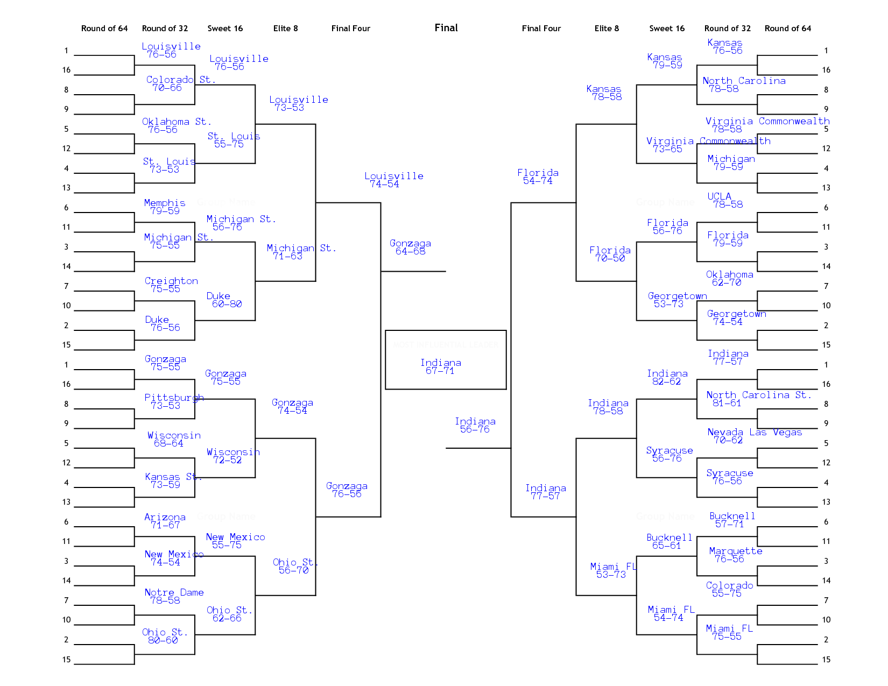

Abstract
Every year since 2008, I have attempted to implement some kind of trained machine learning algorithm to create my March Madness Bracket.
This year I used
Neural Networks .
All source code used for this project can be found
here .
Below is my finalized bracket and earlier versions of my network predicting the tournament.

Data Abstraction
All data for this project was purchased from
kenpom .
He has a wealth of good information and summary statistics about College Basketball.
I decided to represent teams as a 30 tuple of the 30 statistics that kenpom finds most important. Among them are ...
- Tempo
- Adjusted Tempo
- Offensive Efficiency
- Adjusted Offensive Efficiency
- Defensive Efficiency
- Adjusted Defensive Efficiency
- Pythagorean Strength of Schedule
- Effective Field Goal Percentage
- Effective Field Goal Percentage
- Turnover Percentage
- Offensive Rebounding Percentage
- Free Throw Rate
- Effective Field Goal Percentage Against
- Effective Field Goal Percentage Against
- Turnover Percentage Against
- Offensive Rebounding Percentage Against
- Free Throw Rate Against
- 3 Point Percentage
- 2 Point Percentage
- Free Throw Percentage
- Block Percentage
- Steal Percentage
- Assist Percentage
- 3 Point Assist Percentage
For more information of what any of these values actually mean please refer to
kenpom .
The beauty of Neural Networks is that I don't really have to know what these values are, all I have to know is that they represent a team.
Before storing any of these values I normalize them to have a mean of zero and a standard deviation of one.
While this is technically unnecessary it means that the network can train quicker.
A game is a 60 tuple, that is the 30 tuple of one team followed by another. Based on this I can create my Network Topology.
Since a game is a 60 tuple I can define my neural network to have 60 nodes as its input layer.
I then arbitrarily decided on having two hidden layers of size 100 using the Tanh function.
Finally there is one output node, if it is less then zero the first team wins, greater then zero the second team wins.
To be fair to both teams I put all games in twice, once with each team being the first 30 tuples, I then take an average of the results.
This is for both training and playing the tourney.
I played around with the idea with the home team getting to be the first 30 tuples, thereby putting home field advantage into the system,
however I was unable to implement this due to time constraints.
The only human intervention given to this system was rating strength of a win. I consulted a friend, Nish Trivedi, about how to measure win strength.
We ended up on a simple step function.
| Point Range |
Output Layer Value |
Description |
| 0 |
0.0 |
Tie |
| [1-4] |
0.5 |
Could of Gone Either Way |
| [5-9] |
0.9 |
Good Win |
| [10-14] |
1.3 |
Strong Win |
| [15-inf] |
2 |
Slaughter |
Implementation
I used python to implement this solution end to end.
I scraped data from kenpom with the python
requests library.
I grabbed the cookie from my chrome session, and spoofed the rest of the headers.
I accidentally uploaded my session cookie into github, don't worry I have already invalidated it.
For Data Persistence I used sqlite3.
This wasn't necessarily necessary as the data model is simple, and everything easily fits into memory on my laptop,
but I feel like it simplified by DAO a little bit. It also made it a lot easier to transition from just using 2013 data to using data
from all the way back to 2010.
To create the images I used the python image library (PIL).
I actually had to re-compile PIL with libfreetype to get the images to be a little more readable on smaller screens.
The hosting of PIL decided to go down on 3/13/13 just when I was doing it so I had to spend a day without PIL.
For the Neural Network I used the pybrain library. The pybrain library is a python implementation of a lot of Machine learning
algorithms. It is intended to be used as a proof of concept framework, and is not fast.
Because of this I have been training my system since 3/13/2013.
I added to the data set on the already partially stabilized network as it came in.
It has not yet reached convergence.
With this Network it was able to predict 14027 out of 17459 games in its training set correctly.
I know its bad form to evaluate on the same
data set as train, but I did not have enough time to do both, and I would rather have a bracket then statistics about how good my bracket
could be :).
Possible Improvements
My model of a team is frankly not very good. It does not incorporate individual player match ups, injuries or how the team has done recently.
A great way to improve it would be to model the team in aggregate as well as the players.
A way I could do this would be to define each player as a tuple, and append a certain fixed number of them to the end of the team tuple in a
known ordering.
Example orders would be by points scored, or minutes played.
With this in place I could quickly remove players from my system if they get injured or suspended right before the tournament.
Another issue is a team the first week in the season is not the same team as the last week, right before the tournament.
To show this I could implement the 30 tuple of a team as a sliding window of recent
history directly before the game being played, or placing weighting functions on previous games based on how long ago they happened.
All of these improvements would require a much more complicated data model, and for me to start persisting data WAY earlier then I did.
A Note On Using My Code
github link
Due to legal restrictions I am not allowed to broadcast kenpom's data to a general audience.
However I am allowed to give it to specific third parties.
In the github I have my sqlite3 database with all the data encrypted with a one time pad.
If you e-mail me I will send you the one time pad file, and then you can get the original DB in the right place with the following function.